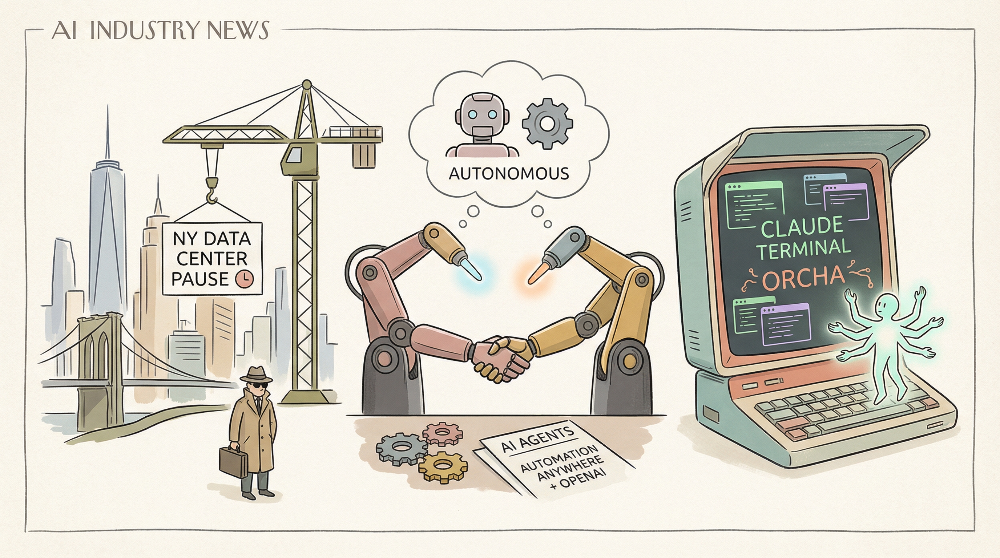

纽约立法者提议暂停三年内新建数据中心
两克伴AIGC日报
2026-02-08 星期日

本期关注：纽约提议暂停新建数据中心，Automation Anywhere与OpenAI合作推出AI原生代理工具；Orcha解决AI代理团队管理难题，Claude推出快速模式提速但成本高，AI代理团队在软件工程任务中效率获验证，AI应用落地与管理工具创新并行推进。
📰 行业动态
Automation Anywhere与OpenAI合作推出AI原生代理工具
🔥 今日焦点
在AI技术日益普及的背景下，一款名为Orcha（orcha.nl）的AI编码代理编排层应运而生。该产品由创始人David与他的合作伙伴共同打造，旨在解决AI代理在团队协作中的管理难题。近期，他们在团队中同时开启了20个Claude Code终端，却陷入了混乱，因为大量的复制粘贴、追踪代理分支和解决合并冲突占据了他们大量时间。这引发了他们对AI代理提升生产力的质疑。
Orcha的出现正是为了解决这一问题。它提供了一款集中式的仪表板，可以管理多个专业化的AI编码代理，如React开发者、API开发者、数据库专家等。每个代理都独立于自己的Git分支上工作，从而提高了团队协作的效率。
Anthropic近日推出“研究预览”功能，推出Claude Opus 4.6模型的快速版，用户只需在Claude Code中输入“/fast”即可访问。然而，该快速模式的成本是正常价格的6倍。Opus 4.6的常规价格为每百万输入5美元，每百万输出25美元，而快速模式的价格为每百万输入30美元，每百万输出150美元。不过，至2月16日结束前，用户可享受50%的折扣，使得成本仅为正常价格的3倍。
快速模式相比普通模式，速度提升了2.5倍，但具体提升多少，官方文档并未明确说明。据Twitter上的消息，Anthropic团队已经构建了一个2.5倍速度的Claude Opus 4.6版本，并将其作为早期实验通过Claude Code和API提供。
近日，NBenkovich在产品领域发布了一项关于AI代理团队在软件工程任务中问题解决能力的实验报告。该实验旨在探究多AI代理团队协作是否比单个强大代理更有助于实际软件工程任务的完成。实验在SWE-bench Verified基准测试上进行，该基准测试包含真实GitHub问题，涉及理解代码库、修改多个文件、运行测试和迭代等环节。
此次实验的重要性在于，它挑战了传统将软件工程视为单一代理修补问题的观点，并提出了一个全新的视角。实验结果表明，多AI代理团队在处理复杂软件工程任务时，相较于单个强大代理，展现出更高的效率和准确性。这一发现对AI领域具有深远影响，不仅为AI在软件工程领域的应用提供了新的思路，也为AI团队协作研究提供了实证依据。
📚 深度长文
本文探讨了StrongDM团队如何通过构建“软件工厂”实现AI深度应用，其中AI编码代理无需人类审查即可自动生成代码。该团队采用非交互式开发模式，以规格和场景驱动代理编写代码、运行测试，并自动收敛。文章强调了以下关键观点：
1. **软件工厂构建**：通过非交互式开发，将规格和场景作为驱动因素，使AI代理自动完成代码编写、测试和收敛过程，无需人工干预。
本文由Ankit Maloo撰写，深入探讨了专家与大型语言模型（LLM）在处理世界模型与词模型方面的差异。文章指出，专家的工作并非简单地“产出可能的产品”，而是“在考虑其他行为者、猜测隐藏状态的基础上做出最佳选择”。相比之下，LLM倾向于单次产出产品，因此需要引入世界模型以实现进步。
文章的核心观点在于，专家与LLM在处理复杂问题时存在本质区别。专家能够根据情境和背景知识做出决策，而LLM则依赖于词模型进行预测。作者通过分析专家工作的特点，揭示了LLM在处理复杂任务时的局限性。
本文摘自David Crawshaw的博客，探讨了AI辅助编程带来的变革及其对个人工作的影响。作者表示，得益于AI工具的辅助，他在编程过程中获得了前所未有的乐趣，因为许多原本难以实现的程序现在变得触手可及。尽管对AI带来的社会变革存在担忧，但在编程领域，这些工具极大地拓展了作者的探索空间，提升了工作效率。文章以独特的视角揭示了AI辅助编程的潜力和价值，为AI从业者和编程爱好者提供了宝贵的参考。
🛠️ 产品推荐
Show HN: Source code graphRAG for Java/Kotlin development based on jQAssistant是一款基于jQAssistant和Neo4j知识图谱的源代码图RAG分析工具。该工具可针对Java/Kotlin项目进行智能分析，帮助开发者快速定位代码问题，优化项目结构。通过构建详细的源代码图，用户可轻松查询代码依赖关系、调用链等信息，提高开发效率。该工具适用于技术从业者，助力解决代码复杂度高、难以维护等问题。
---
Misatay，一款VS Code扩展，颠覆传统AI工具模式，实现与AI协同工作。它不仅支持自主运行多个AI代理，更注重与用户并肩作战。通过Misatay，开发者可轻松规划功能，将计划保存至代码库，确保切换AI会话时数据不丢失。AI将自动处理任务并提交Git更改，让开发者实时追踪任务变更。Misatay以其独特的AI-gui界面，为开发者提供高效、便捷的开发体验。
---
Runtime Fence是一款专为AI代理设计的“杀戮开关”，旨在为用户提供强大的安全控制功能。该产品通过实时监控AI代理的运行状态，确保在异常情况下能够迅速切断AI代理的执行权限，从而避免潜在的安全风险。Runtime Fence的核心功能是实现对AI代理的实时监控与控制，为用户带来更安全、可靠的AI应用体验。对于技术从业者而言，Runtime Fence的AI能力和创新点使其成为一款值得关注的工具。